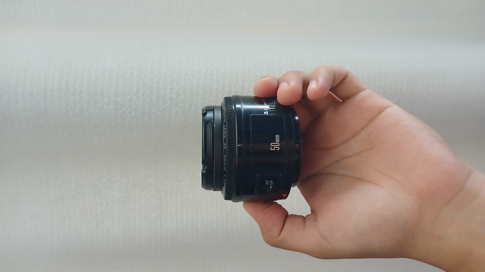

Servicios
Servicio de Fotografía
El servicio de fotografía es el servicio básico proporcionado, consta de una sesión de 1:00 hora a 1:30 de fotografía digital, incluye:
- Todas las fotografías de la sesión
- 25 Fotografías editadas
- 1 o 2 cambios durante la sesión
Impresion fotos Polaroid
El servicio de impresion de fotos polaroid es una gran opcion cuando de dar un detalle se trata. Con una excelente calidad y variantes estilos, estas fotos son una forma de llevar un recuerdo a todos lados. El servicio uncluye:
- Impresion de fotografias individuales.
- Edicion con stiiers, texto y marcos.
- Impresion sobre hojas decoradas.
Venta de Productos

Lente Canon 50mm
Cámara Canon SL2